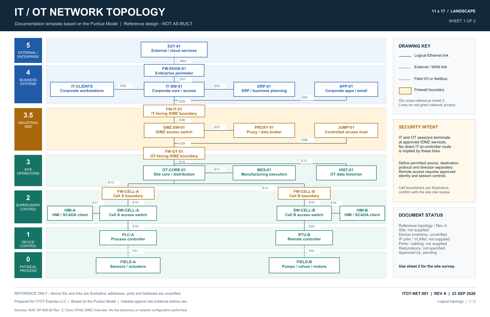
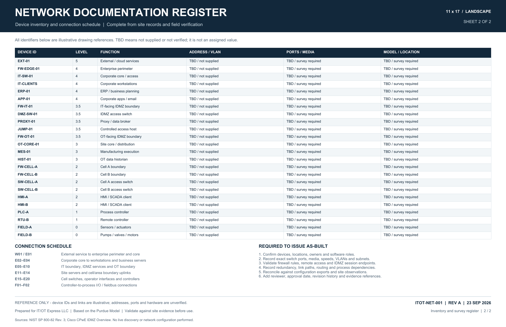

Network Diagrams and Cabinet Layouts
Logical diagrams explain how the network is organized. Physical drawings show equipment locations, cabinet layouts, and the copper or fiber connections between them.
HOLLY SPRINGS, NC · SERVING NORTH CAROLINA
Your team should not have to search old emails or rely on one person to understand a system. We organize technical information into network diagrams, equipment lists, and instructions that explain how to do the work.
The diagrams, equipment records, and procedures agreed for your project, with revision details and any unresolved questions clearly marked.
A technician tracing a cable needs different information from a new employee learning a routine task. We identify who will use each document and organize it around what that person needs to do.
How a project works Relevant experienceWe can update existing files, create missing records, or do both as part of the same project.
Logical diagrams explain how the network is organized. Physical drawings show equipment locations, cabinet layouts, and the copper or fiber connections between them.
Match cable labels to their endpoints, patch-panel positions, and switch ports. Keep those records alongside the equipment list so a technician can trace a connection and check what is installed.
These guides explain routine tasks step by step and record the details someone needs when taking over a role or system.
You do not need to organize everything first. We can start by identifying the most important gaps with you.
You receive the agreed drawings and records with revision dates, verification notes, and any unresolved gaps. For installation work, the handover can also include recorded checks and drawings updated to reflect the installed connections. We agree on editable file formats and review the documents with the people who will maintain them.
Network documentation example
This two-sheet example shows how a logical IT/OT network drawing can connect device identifiers, numbered links, and an equipment register. It follows the Purdue Model, from business systems through an industrial DMZ to plant operations and control devices.
Reference example — not an as-built network. It illustrates a documentation format, not a customer installation. IP addresses, VLANs, physical ports, equipment models, and locations are marked TBD for site verification.


Both files contain two 11 × 17 inch landscape sheets. The Visio file includes editable devices, labels, and connectors. Free downloads are hosted on GitHub.
For a written example of observations and follow-up actions, view the documentation sample.
Yes. We review the files you have, identify gaps or conflicting information, and agree on what needs checking before the documents are updated.
A network diagram shows how devices connect. A rack drawing shows where each device sits in an equipment cabinet. Cable records identify the cables between devices or locations.
We can create it. First, we agree on which systems to document and how the information will be collected and checked.
No. Our drawing services cover networks, equipment racks, and cabling.
Yes. We can write procedures and guides for new employees or existing staff learning a task. We agree on the audience first so the instructions include the detail they need.
Describe the problem, the equipment or software involved, your city, and your preferred timing. A short summary is enough for the first inquiry.
Your choice starts the inquiry message. You can edit it in the form.
Or email hello@itotexpress.com
The short form opens on Zoho Forms and includes a link back to IT/OT Express. Please keep passwords, access codes, and confidential system records out of your first message.
{kind=link}
{kind=link}